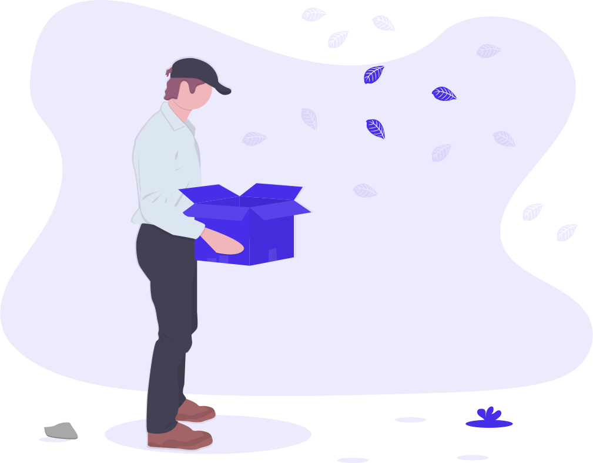

<ion-header>
  <div class="header-close">
    <ion-buttons slot="end" routerLink="/home">
      <ion-icon name="close"></ion-icon>
    </ion-buttons>
    
  </div>
</ion-header>

<ion-content padding class="maincontent">
  <div class="score-headline">
    Dein Score
    <span class="score" *ngIf="userPromise | async">{{ user.score }}</span>
  </div>
  <h2 *ngIf="myDrops">Deine drops</h2>
  <ion-list>
    <ng-container *ngIf="!myDrops || myDrops.length == 0">
      <div class="centered-text">
      <h4>Ups! Hier ist nichts. </h4>
      <ion-text class="textlink" (click)="reloadPage()"
        ><h4>Nochmal versuchen?</h4>
        <br />
        
      </ion-text>
      </div>
    </ng-container>

    <div class="account-drop-wrapper" *ngFor="let item of myDrops">
      <div class="select-item">
        <div class="select-content" [routerLink]="['/drop', item.id]">
          <div class="text-content">
            {{ item.description }}
          </div>
          <div class="drop-score">
            <ion-progress-bar color="primary" value="0.5"></ion-progress-bar>
            <p>{{ item.score }}</p>
          </div>
        </div>
        <ion-item class="more-button">
          <ion-icon
            name="more"
            class="edit-icon"
            (click)="openSelect(item)"
          ></ion-icon>
          <ion-select
            class="select-field"
            interface="action-sheet"
            (ionChange)="showMore(item, $event)"
            #showSelect
          >
            <ion-select-option value="delete">Löschen</ion-select-option>
            <!--<ion-select-option value="edit">Bearbeiten</ion-select-option>-->
          </ion-select>
        </ion-item>
      </div>
    </div>
  </ion-list>
</ion-content>
